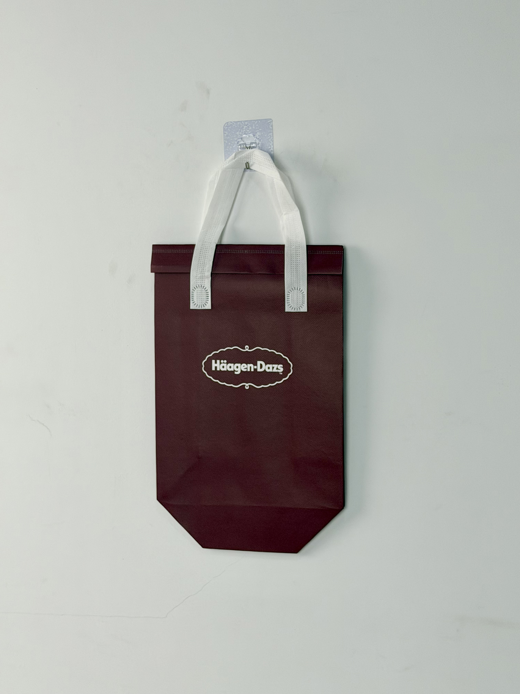

A burgundy thermal tote designed for Haagen-Dazs, featuring understated logo branding and a fold-top closure that extends the brand's luxury retail experience into home delivery.

Haagen-Dazs is one of the world's most recognized super-premium ice-cream brands, positioned as an affordable luxury accessible in premium grocery channels, dedicated boutiques, and increasingly through delivery platforms. In China, the brand has cultivated a reputation for gifting and celebration — tubs of Haagen-Dazs are standard fare for romantic occasions, family gatherings, and corporate relationship building. This positioning creates unique packaging demands: the delivery experience must match the brand's boutique retail environment.
Our customers don't buy ice cream because they're hungry. They buy it as a treat, a gift, or a celebration. The bag needs to honor that emotional intent.
The thermal delivery bag project emerged from explosive growth in ice-cream e-commerce during China's summer months. As third-party delivery platforms expanded cold-chain capabilities, Haagen-Dazs faced a critical touchpoint challenge: the product that arrived at customers' doors needed to feel as special as the product selected in-store.
The design philosophy embraces radical restraint. Rather than competing for attention through bold graphics or complex patterns, the bag communicates through color quality, material texture, and proportional elegance. The deep burgundy field references both the brand's boutique interiors and the color of luxury wine packaging — two associations that reinforce premium perception.
Deep wine-red color associated with premium gifting and boutique retail environments.
Classic Haagen-Dazs wordmark scaled with generous negative space — confident enough to whisper.
Clean folded closure echoes boutique shopping bag proportions without mechanical hardware.
Enhanced foam thickness maintains frozen integrity during extended summer delivery windows.
Ice-cream delivery demands the most stringent cold-chain performance of any food category. Product must remain at or below -18°C throughout transport to prevent texture degradation, melting, and refreezing damage. The Haagen-Dazs tote was engineered specifically for deep-cold retention in China's challenging summer climate.
| Parameter | Specification | Test Standard |
|---|---|---|
| Frozen Retention | < -10°C for 60 min (35°C ambient) | Internal Protocol |
| Load Capacity | 4 kg | ASTM D5265 |
| Condensation Control | Zero external moisture | Internal Protocol |
| Seam Strength | > 25 N/cm | ASTM D1683 |
Premium ice-cream packaging demands manufacturing precision that matches the product's luxury positioning. The five-stage workflow incorporated enhanced insulation bonding and strict thermal validation protocols.
120gsm non-woven PP with burgundy masterbatch. Color matched to Haagen-Dazs boutique interior standard under controlled lighting.
White plastisol screen print of classic logo. Squeegee pressure optimized for clean edge definition on matte laminated surface.
20-micron matte BOPP film for premium hand-feel. Matte finish reduces surface glare and enhances burgundy color depth.
5mm EPE foam bonded to aluminum-PE barrier. Heat-compression at 4kg/cm for maximum thermal sandwich integrity.
Ultrasonic die-cutting with sealed edges. White handles attached with reinforced stitching. Random-sample thermal probe testing validates 60-minute frozen retention.
The thermal tote was deployed across Haagen-Dazs's summer e-commerce and boutique delivery channels in tier-1 and tier-2 cities. Rollout timing aligned with peak ice-cream season and the Qixi Festival — China's equivalent of Valentine's Day, a major gifting occasion for premium desserts.
Key Insight: Gift recipients frequently commented that the burgundy bag made the ice cream feel like a "proper present" rather than a casual food delivery. This perception shift justified premium pricing and encouraged repeat gifting behavior — a critical revenue driver for Haagen-Dazs's China business.
The bag's elegant appearance also reduced the stigma some consumers felt about ordering ice cream for home delivery. Rather than a utilitarian courier package, the Haagen-Dazs tote resembled a boutique shopping bag — making the delivery feel like a personal indulgence rather than lazy convenience.
Three design decisions differentiate this ice-cream delivery bag from standard frozen-food packaging. Each addresses the specific psychology of luxury dessert consumption.
In a delivery market cluttered with loud graphics and promotional messaging, the near-empty bag surface reads as confidence. Haagen-Dazs doesn't need to explain itself — the restrained presentation assumes the customer already knows the brand's value. This assumption itself becomes a luxury cue.
Standard 2-3mm bags allow ice cream to soften at the edges within 20 minutes in summer heat. The 5mm specification maintains core temperature low enough to prevent any textural change — the difference between premium ice cream and a disappointing melted puddle.
The folded closure mimics the paper shopping bags used in Haagen-Dazs boutiques worldwide. This structural echo creates continuity between in-store and delivery experiences — reassuring customers that the product inside has received the same care regardless of purchase channel.
We engineer deep-cold thermal bags for ice cream, gelato, and premium dessert brands. From luxury aesthetics to frozen integrity, we deliver packaging worthy of your product.